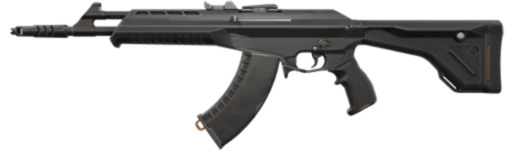

Armas mais usadas no Valorant
| Imagem | Nome | Tipo | Descrição |
|---|---|---|---|
| "> | Vandal | Rifle | Rifle automático com alto dano letal em HS a qualquer distância. |
 |
Phantom | Rifle | Alternativa da Vandal, melhor controle de recuo e silenciada. |
 |
Spectre | SMG | Submetralhadora versátil com bom custo-benefício. |
 |
Judge | Shotgun | Escopeta automática forte em combates de curta distância. |
 |
Guardian | Rifle Semi | Rifle semiautomático com alto dano por bala e ótima precisão. |